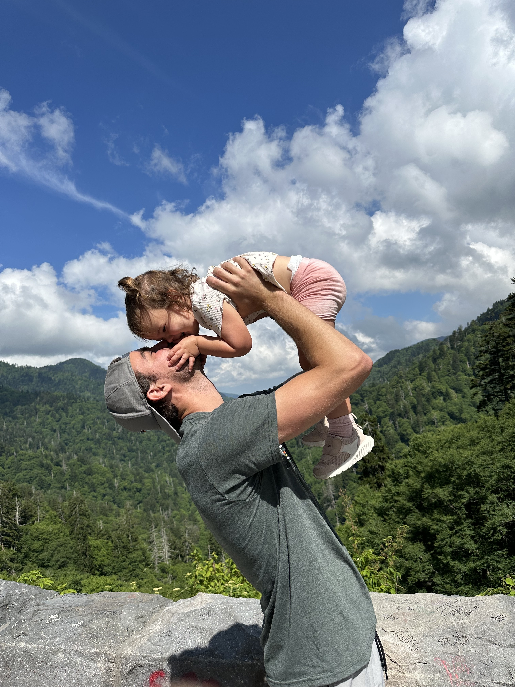
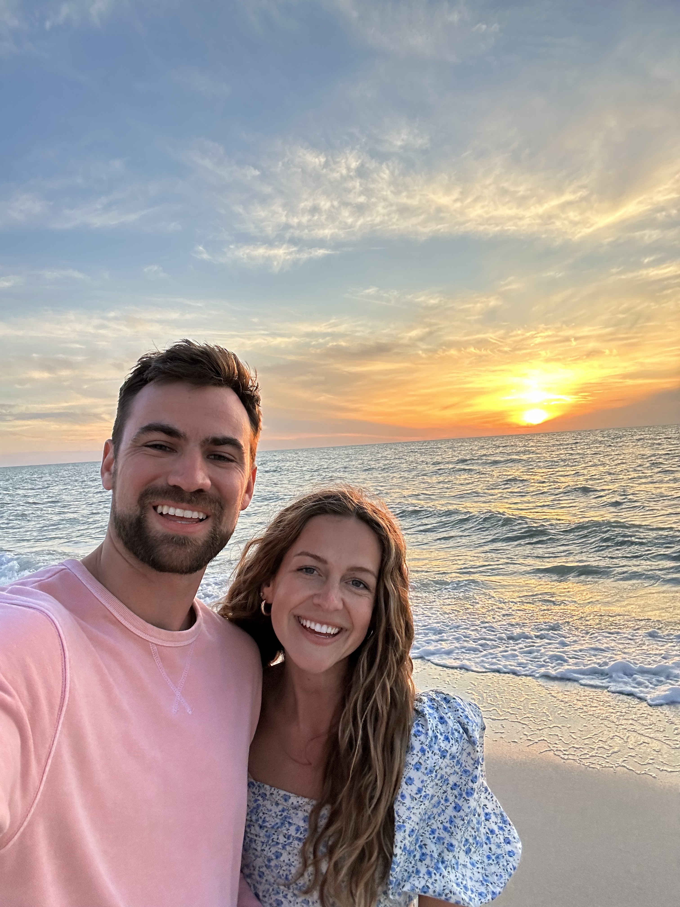
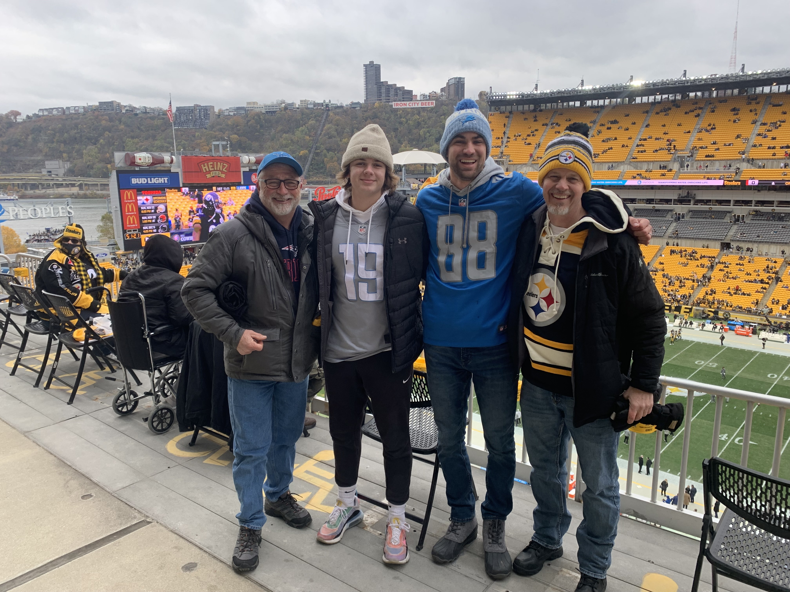

Outside of Work
Probably outside with my family somewhere.
Outside of work, I love being active with my family. My wife and I have a four-year-old daughter and a 10-month-old son, and we recently moved to St. Petersburg, Florida after spending our whole lives struggling through Midwest winters.
These days, we love going to the beach, chasing sunsets, exploring parks, and finding the next local ice cream shop. If I am not near the water, I am probably hoping to be in the mountains somewhere, camping, hiking, or exploring a new place.
Back to Work
Chasing sunsets and finding our new rhythm.
Moving to St. Petersburg has made being outside feel like part of our family rhythm. Turns out the Florida beaches are a good substitute for Midwest winters.
My faith and church community are also a huge part of my life. I love building community with my church family and being around people who help me grow, serve, and stay grounded.

If I am not near the water, I am probably hoping for the mountains.
I love meeting new people, exploring new places, and collecting new experiences. The places matter, but the people I come across along the way tend to be what stick with me.
I have been described as easygoing, positive, loyal, and encouraging. I rarely say no to helping a friend, and my work ethic was instilled in me from a young age. If I commit to something or someone, I am going to see it through.

Sports Fan, For Better or Worse
Is my mood sometimes effected by the outcomes of the Detroit Lions, Detroit Pistons, and Michigan Football? Yes. But having kids has helped me get over heartbreaking losses a lot faster than I used to. I am also a big sports nerd, especially when it comes to managing my fantasy football dynasty team or talking NBA history.
Yes, I can name every NBA champion and the best player on that team from the 90s through today. Ask me sometime.
